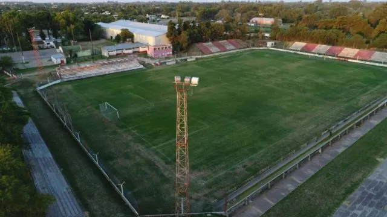
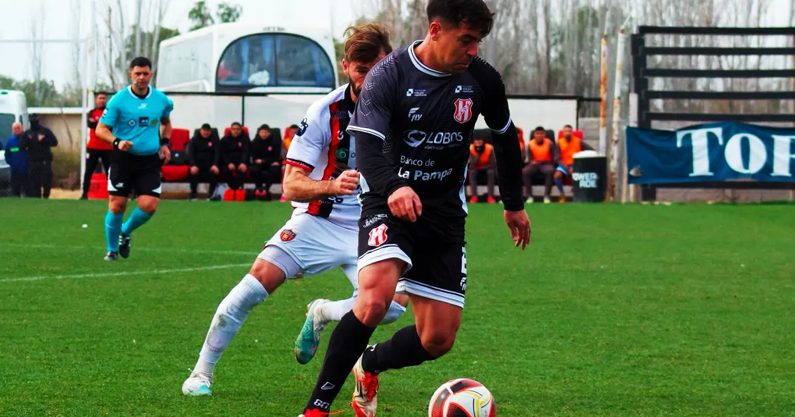
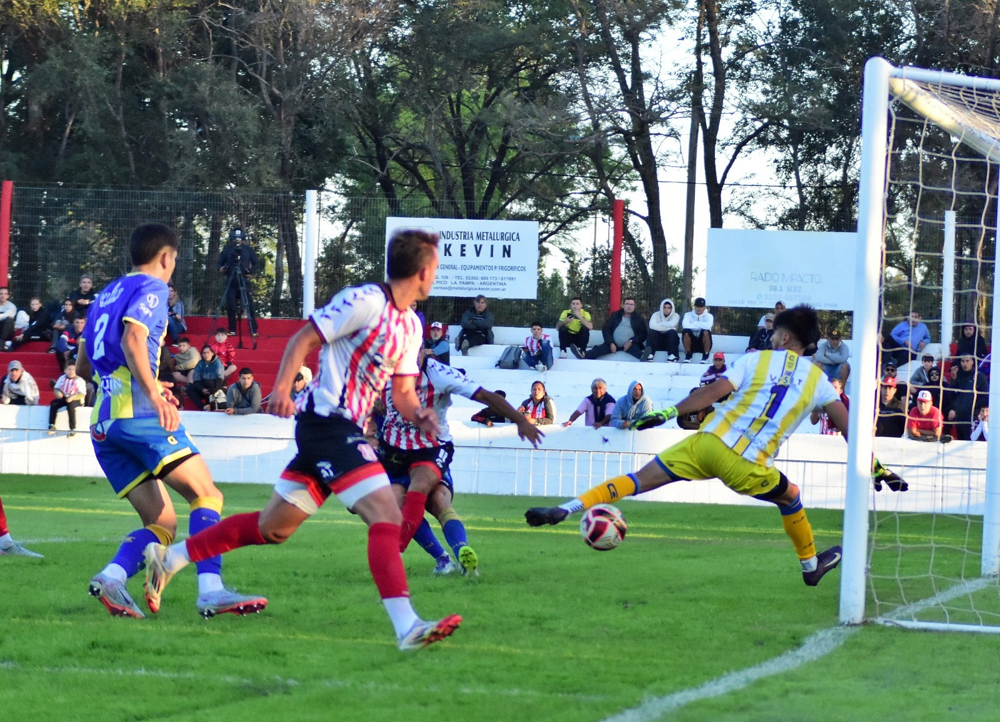
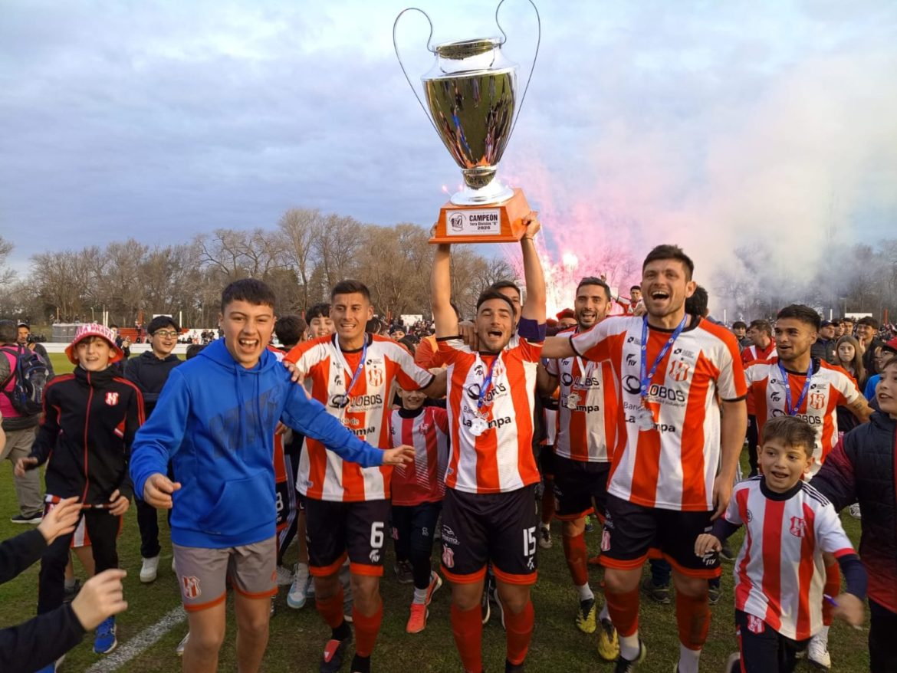

El Club Atlético Costa Brava nació el 21 de agosto de 1932 en el entonces llamado barrio de “las ranas”, hoy Barrio Este, en General Pico. Era la zona “detrás de las vías”, donde crecían los pueblos que se armaban alrededor del ferrocarril. Allí, entre calles de tierra, vecinos y familias trabajadoras, un grupo de hombres decidió darle forma a un club propio, que representara el orgullo del barrio y les diera un lugar a los pibes para jugar a la pelota con una camiseta que los identificara.
La primera comisión directiva quedó integrada por Bautista Matos como presidente, Plácido Luis como vicepresidente, Diodoro Guajardo como secretario, Manuel Granja como prosecretario, Práxedes Alonso como tesorero, Diego Mainz como protesorero y Ángel Valentín Pérez como secretario de actas, acompañados por los vocales Miguel Moreno, Julio Speranza, Emilio Somovilla, Manuel Bermúdez y Constantino Entiz. Desde ese primer día, Costa Brava se pensó como mucho más que un equipo de fútbol: se pensó como una institución social del barrio.

BASQUET

HOCKEY

FUTBOL

VOLEY

TENIS

RUNNING

Costa Brava empató sin goles ante Fundación Amigos del Deporte (FADEP), este miércoles en Mendoza, y sumó su tercer punto en la Fase Reválida del Torneo Federal "A". El conjunto dirigido por Marcos Gelabert continúa invicto en esta segunda etapa del certamen, aunque todavía no pudo conseguir una victoria.

El conjunto albirrojo recibe al elenco neuquino por la última fecha de la Zona 3 del Torneo Federal A. Tras la salida de Rodrigo Villalonga, un cuerpo técnico interino estará al frente del equipo en un partido clave para definir la localía en la Reválida.

Costa Brava de General Pico se impuso 4 a 3 en los penales a Ferro de Pico -luego de igualar 0 a 0 en el tiempo reglamentario- y se consagró campeón de la Liga Pampeana de Fútbol 2026. El albirrojo obtuvo con el de hoy su título número 16 y alcanzó a Alvear FBC como máximo ganador de la historia de la Liga Pampeana.
| Pos | Club | PT | PJ | PG | PE | PP | DF |
|---|---|---|---|---|---|---|---|
| 2 |  Club Sportivo Independiente Club Sportivo Independiente |
37 | 22 | 10 | 7 | 5 | 10 |
| 5 |  Pico Football Club Pico Football Club |
32 | 22 | 9 | 5 | 8 | 0 |
| 7 |  Club Atlético Costa Brava Club Atlético Costa Brava |
27 | 22 | 7 | 6 | 9 | 2 |
| 8 |  Ferro Carril Oeste Ferro Carril Oeste |
27 | 22 | 6 | 9 | 7 | -5 |
| 10 |  Club Social y Atlético Ferro Carril Oeste Club Social y Atlético Ferro Carril Oeste |
24 | 22 | 6 | 6 | 10 | -4 |
| 11 |  Club Atlético Ferro Carril Oeste Club Atlético Ferro Carril Oeste |
20 | 22 | 4 | 8 | 10 | -15 |